Mapping
Jens Daniel Müller
02 December, 2020
Last updated: 2020-12-02
Checks: 7 0
Knit directory: emlr_obs_v_XXX/
This reproducible R Markdown analysis was created with workflowr (version 1.6.2). The Checks tab describes the reproducibility checks that were applied when the results were created. The Past versions tab lists the development history.
Great! Since the R Markdown file has been committed to the Git repository, you know the exact version of the code that produced these results.
Great job! The global environment was empty. Objects defined in the global environment can affect the analysis in your R Markdown file in unknown ways. For reproduciblity it’s best to always run the code in an empty environment.
The command set.seed(20200707) was run prior to running the code in the R Markdown file. Setting a seed ensures that any results that rely on randomness, e.g. subsampling or permutations, are reproducible.
Great job! Recording the operating system, R version, and package versions is critical for reproducibility.
Nice! There were no cached chunks for this analysis, so you can be confident that you successfully produced the results during this run.
Great job! Using relative paths to the files within your workflowr project makes it easier to run your code on other machines.
Great! You are using Git for version control. Tracking code development and connecting the code version to the results is critical for reproducibility.
The results in this page were generated with repository version 9183e8f. See the Past versions tab to see a history of the changes made to the R Markdown and HTML files.
Note that you need to be careful to ensure that all relevant files for the analysis have been committed to Git prior to generating the results (you can use wflow_publish or wflow_git_commit). workflowr only checks the R Markdown file, but you know if there are other scripts or data files that it depends on. Below is the status of the Git repository when the results were generated:
Ignored files:
Ignored: .Rhistory
Ignored: .Rproj.user/
Unstaged changes:
Modified: README.md
Modified: code/Workflowr_project_managment.R
Modified: data/auxillary/params_local.rds
Note that any generated files, e.g. HTML, png, CSS, etc., are not included in this status report because it is ok for generated content to have uncommitted changes.
These are the previous versions of the repository in which changes were made to the R Markdown (analysis/mapping_predictor_preparation.Rmd) and HTML (docs/mapping_predictor_preparation.html) files. If you’ve configured a remote Git repository (see ?wflow_git_remote), click on the hyperlinks in the table below to view the files as they were in that past version.
| File | Version | Author | Date | Message |
|---|---|---|---|---|
| html | 22d0127 | jens-daniel-mueller | 2020-12-01 | Build site. |
| html | 0ff728b | jens-daniel-mueller | 2020-12-01 | Build site. |
| html | f8f449c | jens-daniel-mueller | 2020-12-01 | Build site. |
| html | cf19652 | jens-daniel-mueller | 2020-11-30 | Build site. |
| html | 196be51 | jens-daniel-mueller | 2020-11-30 | Build site. |
| Rmd | 7a4b015 | jens-daniel-mueller | 2020-11-30 | first rebuild on ETH server |
| Rmd | bc61ce3 | Jens Müller | 2020-11-30 | Initial commit |
| html | bc61ce3 | Jens Müller | 2020-11-30 | Initial commit |
path_functions <- "/nfs/kryo/work/updata/emlr_cant/utilities/functions/"
path_files <- "/nfs/kryo/work/updata/emlr_cant/utilities/files/"path_preprocessing <-
"/nfs/kryo/work/updata/emlr_cant/observations/preprocessing/"
path_version_data <-
paste(
"/nfs/kryo/work/updata/emlr_cant/observations/",
params_local$Version_ID,
"/data/",
sep = ""
)
path_version_figures <-
paste(
"/nfs/kryo/work/updata/emlr_cant/observations/",
params_local$Version_ID,
"/figures/",
sep = ""
)1 Libraries
Loading libraries specific to the the analysis performed in this section.
library(metR)
library(marelac)
library(gsw)2 Required data
All required data sets were subsetted spatially in the read-in section Data base. Currently, following data sets are used for mapping:
2.1 GLODAPv2_2016b_MappedClimatologies
Following variables are currently used:
- Phosphate (+Phosphate*)
- Silicate
- Oxygen (+AOU)
- TAlk (surface only)
- TCO2 (surface only)
variables <-
c("oxygen", "PO4", "silicate")
# i_variable <- variables[1]
for (i_variable in variables) {
temp <- read_csv(paste(
path_preprocessing,
paste("GLODAPv2_2016_MappedClimatology_", i_variable, ".csv", sep = ""),
sep = ""
))
if (exists("GLODAP_predictors")) {
GLODAP_predictors <- full_join(GLODAP_predictors, temp)
}
if (!exists("GLODAP_predictors")) {
GLODAP_predictors <- temp
}
}
rm(temp, i_variable, variables)
GLODAP_predictors <- GLODAP_predictors %>%
rename(phosphate = PO4)
# removed na's attributable to slightly different coverage of predictor fields
GLODAP_predictors <- GLODAP_predictors %>%
drop_na()variables <-
c("PO4", "silicate", "TAlk", "TCO2")
for (i_variable in variables) {
temp <- read_csv(paste(
path_preprocessing,
paste("GLODAPv2_2016_MappedClimatology_", i_variable, ".csv", sep = ""),
sep = ""
))
if (exists("GLODAP_predictors_CO2")) {
GLODAP_predictors_CO2 <- full_join(GLODAP_predictors_CO2, temp)
}
if (!exists("GLODAP_predictors_CO2")) {
GLODAP_predictors_CO2 <- temp
}
}
rm(temp, i_variable, variables)
GLODAP_predictors_CO2 <- GLODAP_predictors_CO2 %>%
rename(phosphate = PO4)
# removed na's attributable to slightly different coverage of predictor fields
GLODAP_predictors_CO2 <- GLODAP_predictors_CO2 %>%
drop_na()2.2 World Ocean Atlas 2018
- Salinity
- Temperature
- Neutral density
WOA18_predictors <-
read_csv(paste(path_preprocessing,
"WOA18_sal_tem.csv",
sep = ""))3 Join WOA18 + GLODAP
WOA18 and GLODAP predictor climatologies are merged. Only horizontal grid cells with observations from both predictor fields are kept.
CAVEAT: Coverage of GLODAP climatologies differs slightly for parameters (some are NA in some regions)
predictors <- full_join(
GLODAP_predictors,
WOA18_predictors)
# unique(GLODAP_predictors$depth)
# unique(WOA18_predictors$depth)
predictors <- predictors %>%
drop_na()
predictors <- predictors %>%
filter(depth >= params_local$depth_min | gamma >= params_local$gamma_min)
rm(GLODAP_predictors)3.1 Apply density threshold
The predictor field was split into two parts:
- Deep water: neutral densities >= 26 and depth >= 150m
- Shallow water: rest
predictors_surface <- full_join(
GLODAP_predictors_CO2,
WOA18_predictors)
predictors_surface <- predictors_surface %>%
drop_na()
predictors_surface <- predictors_surface %>%
filter(depth < params_local$depth_min,
gamma < params_local$gamma_min)3.2 Control plots
3.2.1 Maps
Three maps are generated to control successful merging of data sets.
p_map_climatology(
df = predictors,
var = "phosphate")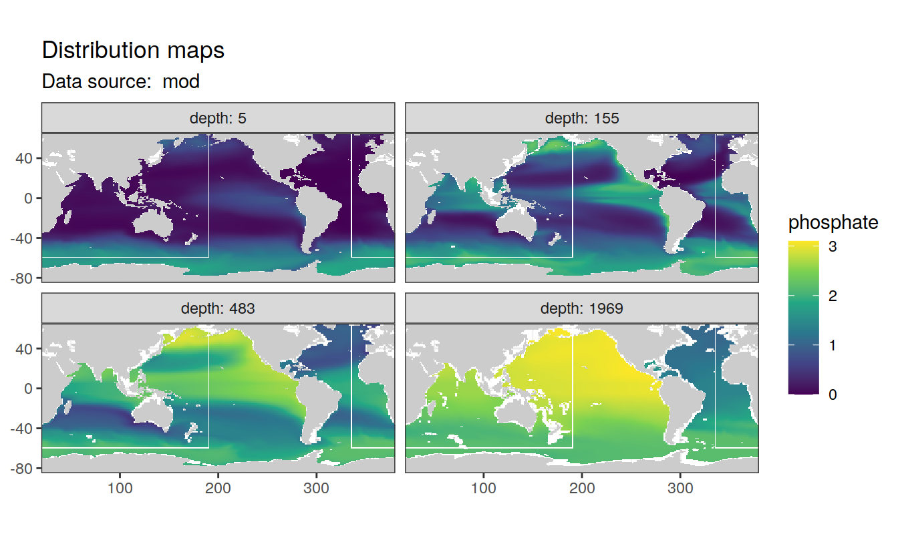
p_map_climatology(
df = predictors,
var = "tem")
3.2.2 Maps surface
Three maps are generated to control successful merging of data sets.
p_map_climatology(
df = predictors_surface,
var = "TAlk")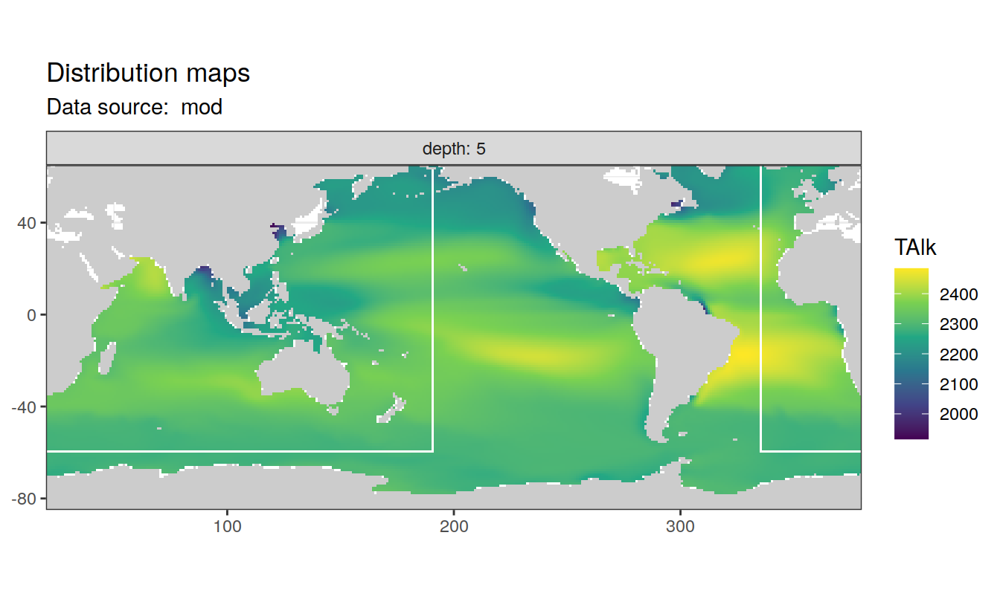
p_map_climatology(
df = predictors_surface,
var = "TCO2")
p_map_climatology(
df = predictors_surface,
var = "sal")
p_map_climatology(
df = predictors_surface,
var = "tem")
3.2.3 Predictor profiles
Likewise, predictor profiles for the North Atlantic (40.5 / 335.5) are plotted to control successful merging of the data sets.
N_Atl <- predictors %>%
filter(lat == params_global$lat_Atl_profile,
lon == params_global$lon_Atl_section)
N_Atl <- N_Atl %>%
select(-c(basin, basin_AIP)) %>%
pivot_longer(oxygen:gamma, names_to = "parameter", values_to = "value")
N_Atl %>%
ggplot(aes(value, depth)) +
geom_path() +
geom_point() +
scale_y_reverse() +
facet_wrap(~parameter,
scales = "free_x",
ncol = 2)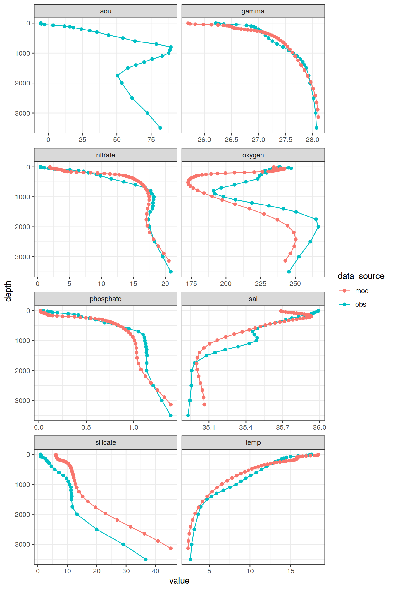
rm(N_Atl)4 Prepare predictor fields
4.1 PO4* calculation
The predictor PO4* was be calculated according to Clement and Gruber (2018), ie based on oxygen. Please note that an errornous equations for PO4* calculation is given in the supplement of Gruber et al (2019), based on nitrate.
predictors <- predictors %>%
mutate(phosphate_star = b_phosphate_star(phosphate, oxygen))4.1.1 Maps
p_map_climatology(
df = predictors,
var = "phosphate_star",
col = "divergent")

4.2 AOU
4.2.1 Calculation
AOU was calculated as the difference between saturation concentration and observed concentration. CAVEAT: Algorithms used to calculate oxygen saturation concentration are not yet identical in GLODAP data set (fitting) and predictor climatologies (mapping).
predictors <- predictors %>%
mutate(aou = b_aou(sal, tem, depth, oxygen))4.2.2 Maps
p_map_climatology(
df = predictors,
var = "aou",
col = "divergent")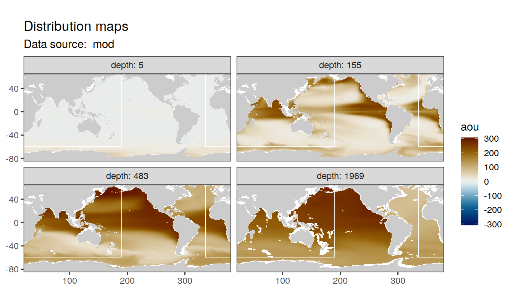
4.3 Isoneutral slabs
The following boundaries for isoneutral slabs were defined:
- Atlantic: -, 26, 26.5, 26.75, 27, 27.25, 27.5, 27.75, 27.85, 27.95, 28.05, 28.1, 28.15, 28.2,
- Indo-Pacific: -, 26, 26.5, 26.75, 27, 27.25, 27.5, 27.75, 27.85, 27.95, 28.05, 28.1,
Continuous neutral density (gamma) values based on WOA18 are grouped into isoneutral slabs.
predictors <- m_cut_gamma(predictors, "gamma")5 Plot al predictor sections
5.1 Deep waters
Predictor sections along with lines are shown below for each (potential) predictor variable.
map +
geom_bin2d(data = predictors,
aes(lon, lat),
binwidth = c(1,1)) +
geom_vline(xintercept = params_global$longitude_sections_regular,
col = "white") +
scale_fill_viridis_c(direction = -1) +
theme(legend.position = "bottom")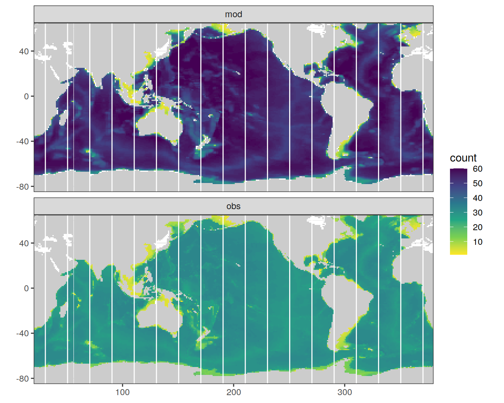
vars <-
c(
"gamma",
"sal",
"tem",
"phosphate",
"phosphate_star",
"oxygen",
"aou",
"silicate"
)
# i_var <- vars[1]
for (i_var in vars) {
print(
p_section_climatology_regular(
df = predictors,
var = i_var)
)
}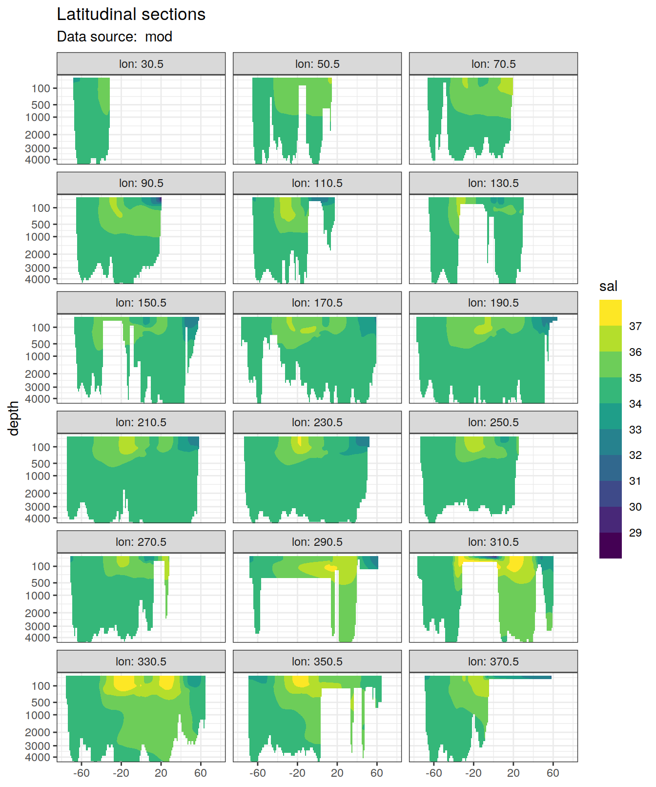
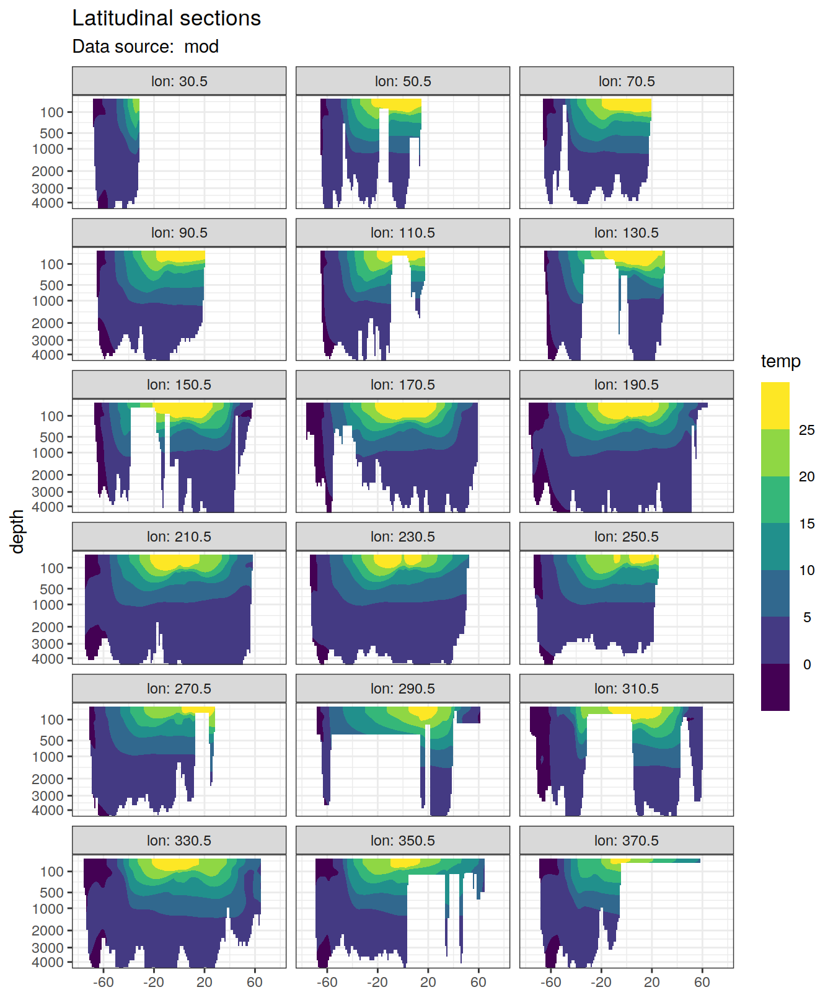
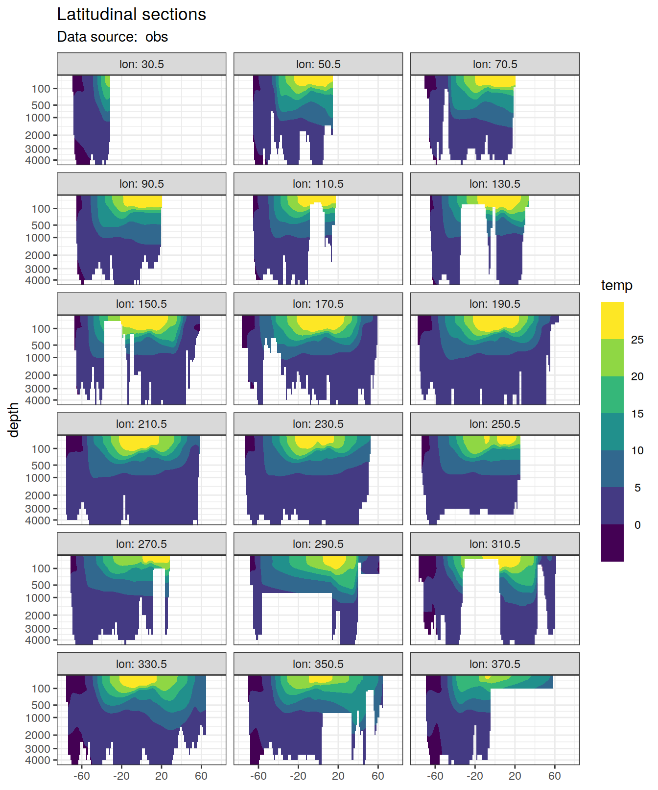
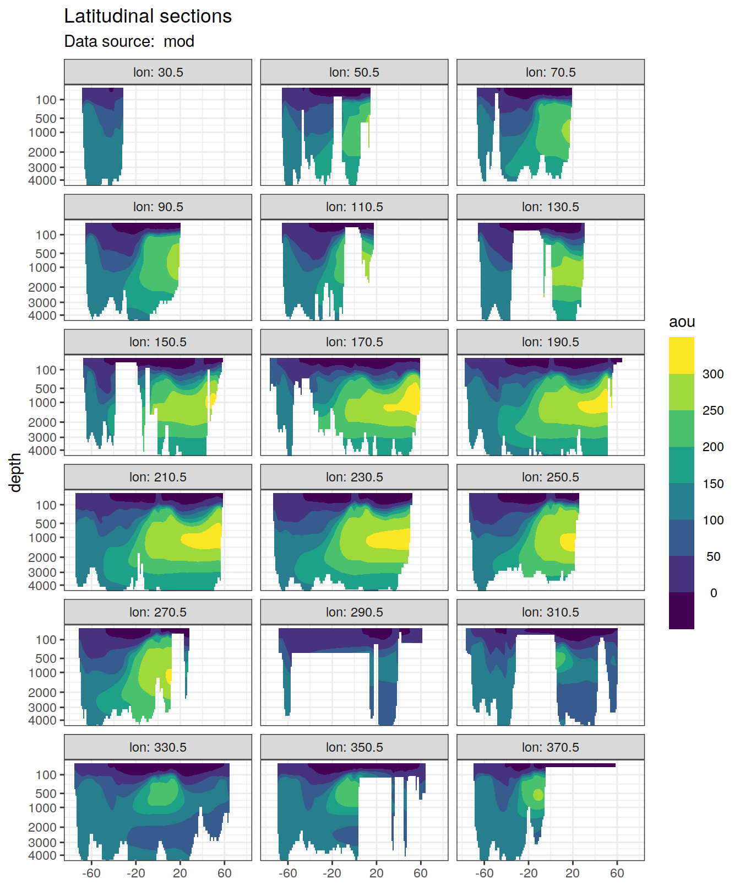
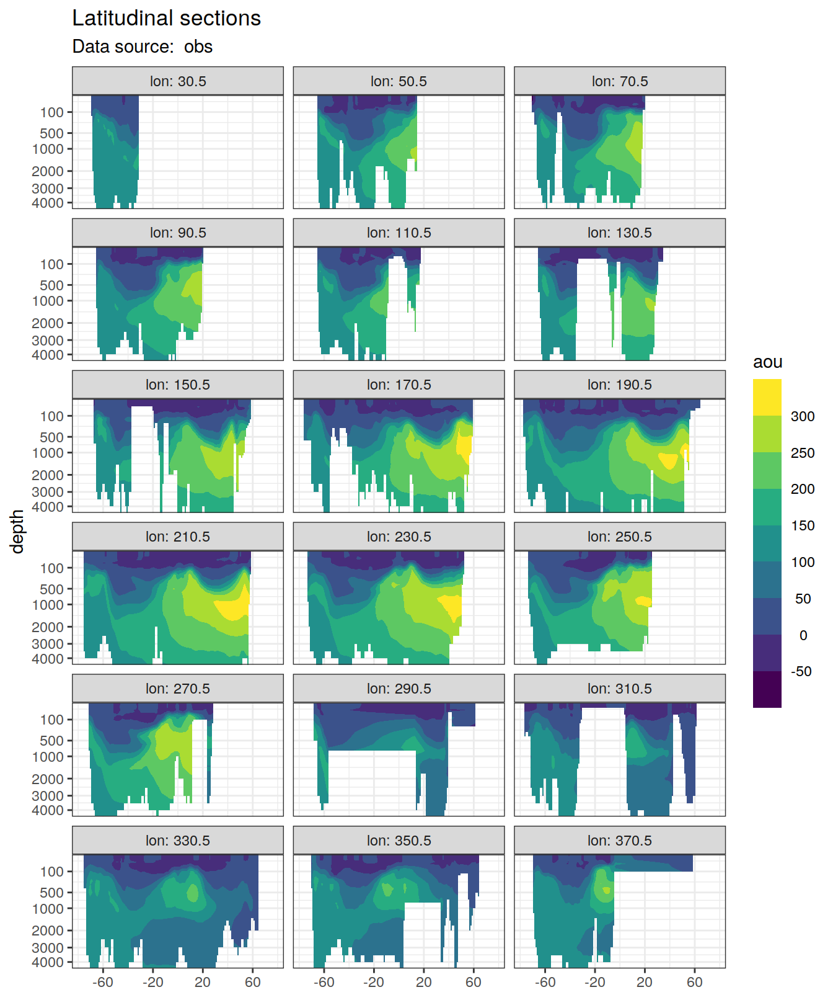
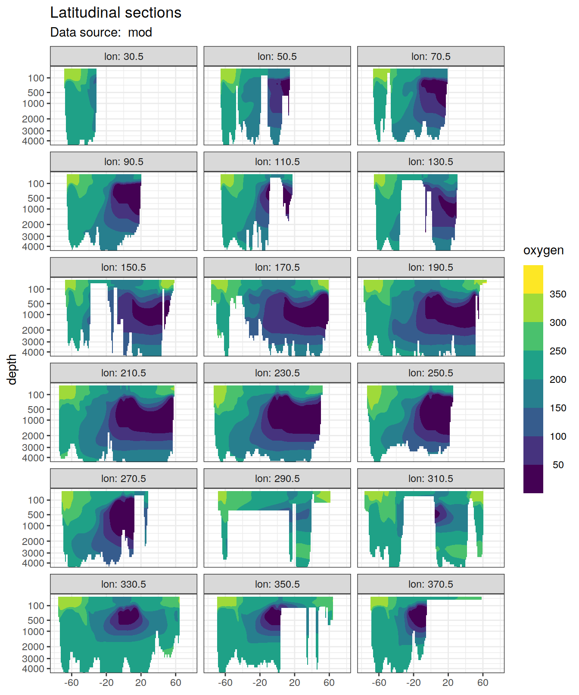
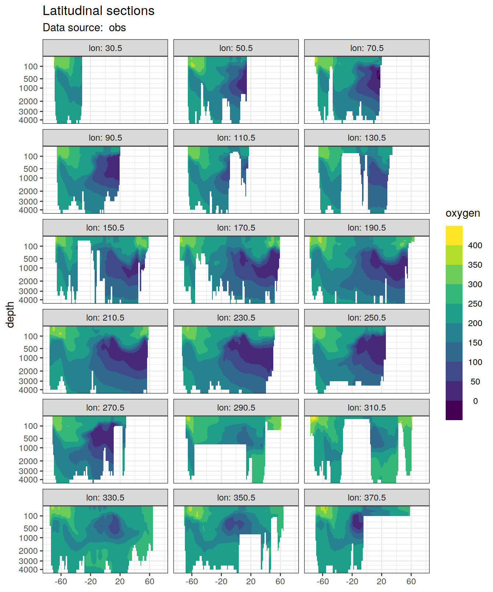
5.2 Surface waters
Predictor sections along with lines are shown below for each (potential) predictor variable.
map +
geom_bin2d(data = predictors_surface,
aes(lon, lat),
binwidth = c(1,1)) +
geom_vline(xintercept = params_global$longitude_sections_regular,
col = "white") +
scale_fill_viridis_c(direction = -1) +
theme(legend.position = "bottom")
vars <-
c(
"gamma",
"sal",
"tem",
"TCO2",
"TAlk"
)
for (i_var in vars) {
print(
p_section_climatology_regular(
df = predictors_surface,
var = i_var)
)
}


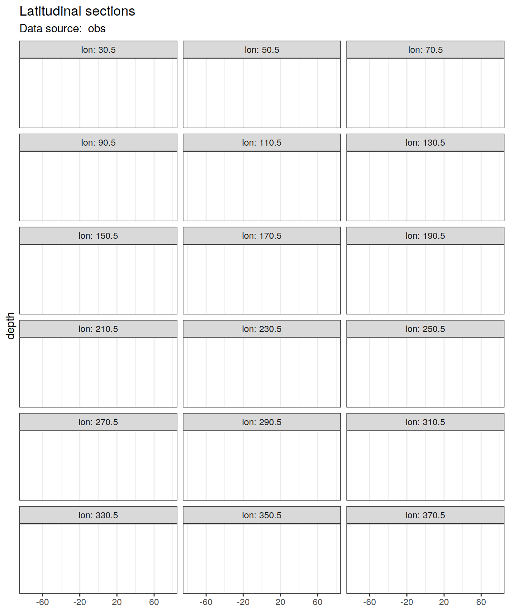

6 Write csv
predictors %>%
write_csv(paste(path_version_data,
"W18_st_G16_opsn.csv",
sep = ""))
predictors_surface %>%
write_csv(paste(path_version_data,
"W18_st_G16_opsn_surface.csv",
sep = ""))
sessionInfo()R version 4.0.3 (2020-10-10)
Platform: x86_64-pc-linux-gnu (64-bit)
Running under: openSUSE Leap 15.1
Matrix products: default
BLAS: /usr/local/R-4.0.3/lib64/R/lib/libRblas.so
LAPACK: /usr/local/R-4.0.3/lib64/R/lib/libRlapack.so
locale:
[1] LC_CTYPE=en_US.UTF-8 LC_NUMERIC=C
[3] LC_TIME=en_US.UTF-8 LC_COLLATE=en_US.UTF-8
[5] LC_MONETARY=en_US.UTF-8 LC_MESSAGES=en_US.UTF-8
[7] LC_PAPER=en_US.UTF-8 LC_NAME=C
[9] LC_ADDRESS=C LC_TELEPHONE=C
[11] LC_MEASUREMENT=en_US.UTF-8 LC_IDENTIFICATION=C
attached base packages:
[1] stats graphics grDevices utils datasets methods base
other attached packages:
[1] gsw_1.0-5 testthat_3.0.0 marelac_2.1.10 shape_1.4.5
[5] metR_0.9.0 scico_1.2.0 patchwork_1.1.0 collapse_1.4.2
[9] forcats_0.5.0 stringr_1.4.0 dplyr_1.0.2 purrr_0.3.4
[13] readr_1.4.0 tidyr_1.1.2 tibble_3.0.4 ggplot2_3.3.2
[17] tidyverse_1.3.0 workflowr_1.6.2
loaded via a namespace (and not attached):
[1] httr_1.4.2 viridisLite_0.3.0 jsonlite_1.7.1
[4] here_0.1 modelr_0.1.8 assertthat_0.2.1
[7] blob_1.2.1 cellranger_1.1.0 yaml_2.2.1
[10] pillar_1.4.7 backports_1.1.10 lattice_0.20-41
[13] glue_1.4.2 RcppEigen_0.3.3.7.0 digest_0.6.27
[16] promises_1.1.1 checkmate_2.0.0 rvest_0.3.6
[19] colorspace_2.0-0 htmltools_0.5.0 httpuv_1.5.4
[22] Matrix_1.2-18 pkgconfig_2.0.3 broom_0.7.2
[25] seacarb_3.2.14 haven_2.3.1 scales_1.1.1
[28] whisker_0.4 later_1.1.0.1 git2r_0.27.1
[31] farver_2.0.3 generics_0.0.2 ellipsis_0.3.1
[34] withr_2.3.0 cli_2.2.0 magrittr_2.0.1
[37] crayon_1.3.4 readxl_1.3.1 evaluate_0.14
[40] fs_1.5.0 fansi_0.4.1 xml2_1.3.2
[43] RcppArmadillo_0.10.1.2.0 oce_1.2-0 tools_4.0.3
[46] data.table_1.13.2 hms_0.5.3 lifecycle_0.2.0
[49] munsell_0.5.0 reprex_0.3.0 isoband_0.2.2
[52] compiler_4.0.3 rlang_0.4.9 grid_4.0.3
[55] rstudioapi_0.13 labeling_0.4.2 rmarkdown_2.5
[58] gtable_0.3.0 DBI_1.1.0 R6_2.5.0
[61] lubridate_1.7.9 knitr_1.30 rprojroot_2.0.2
[64] stringi_1.5.3 parallel_4.0.3 Rcpp_1.0.5
[67] vctrs_0.3.5 dbplyr_1.4.4 tidyselect_1.1.0
[70] xfun_0.18